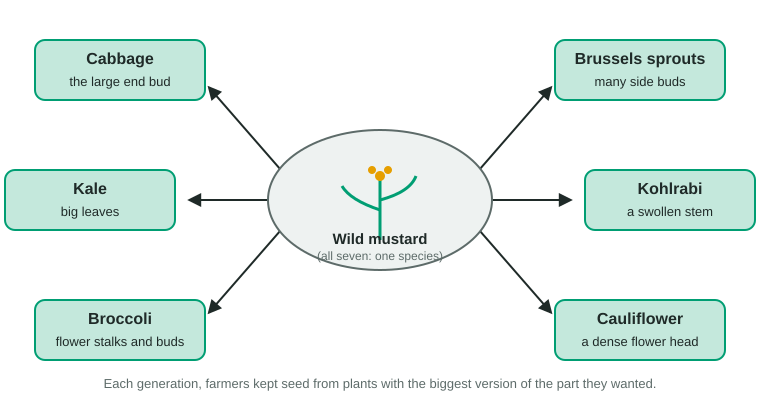
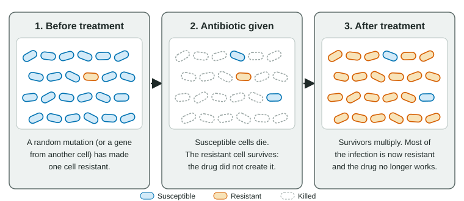

Long before anyone knew about genes, farmers and herders were changing living things by choosing which ones to breed. Darwin opened On the Origin of Species with pigeons and farm animals for exactly that reason: if people can change a population this much in a few thousand years, the environment can do the same over far longer. This page covers deliberate selection by humans and the selection we cause without meaning to.
What artificial selection is
In artificial selection, also called selective breeding, people decide which individuals reproduce, based on traits they want: more milk, larger grains, a calmer temperament, a particular coat. Only the chosen individuals pass on their alleles, so the next generation has more of the wanted trait. Repeat this for many generations and the population can change enormously.
The logic is the same as natural selection, with one difference: who or what decides which individuals reproduce.
| Natural selection | Artificial selection | |
|---|---|---|
| What decides who reproduces | The environment: predators, food, climate, mates | People, choosing the traits they want |
| Traits favored | Those that raise survival and reproduction in that environment | Those people find useful or attractive, even if harmful in the wild |
| Needs heritable variation? | Yes | Yes |
| Speed | Usually slow; depends on how strongly the environment sorts | Can be fast, because breeders can let only a few individuals breed |
| Examples | Beak depth in drought, peppered moths | Dog breeds, corn, cabbage family, dairy cattle |
Domestication: dogs, corn and cabbages
Domestication is the change of a wild population into one adapted to living with people. Dogs descend from gray wolves, domesticated at least 15,000 years ago; today's breeds, from Chihuahuas to Great Danes, were mostly shaped in the last few centuries by breeders choosing size, shape, coat and behavior. Corn (maize) comes from teosinte, a wild grass of southern Mexico whose small ears carry about a dozen hard-cased kernels. Farmers there began selecting it about 9,000 years ago, and kept seed from plants with more, larger, softer kernels that stayed on the ear until harvest.

The clearest example may be the wild mustard of European sea cliffs (Figure 1). Farmers who kept seed from plants with the biggest leaves produced kale; from plants with a big end bud, cabbage; from plants with many side buds, Brussels sprouts; from plants with a swollen stem, kohlrabi; and from plants with large clusters of flower buds, broccoli and cauliflower. All are still one species and can be crossed with one another.
What breeding experiments show
Two long-running experiments show how artificial selection works and where it stops.
- Tame foxes. Starting in 1959, researchers in Siberia let only the calmest silver foxes on a fur farm breed each generation. Within about ten generations some foxes wagged their tails and sought human contact, and after a few decades most did. Traits nobody selected also appeared: floppy ears, curly tails, patchy coats. Genes that affect tameness, by changing hormones and development, also affect these traits (pleiotropy), so selecting one trait dragged the others along.
- Oil in corn. Since 1896, breeders in Illinois have planted only the kernels from ears with the highest oil content in one line, and from ears with the lowest in another. After more than 100 generations the high line still responds, because oil content is controlled by many genes and enough heritable variation remains. The low line fell quickly and then leveled off near the lowest oil a kernel can hold and still grow.
Two general lessons follow. Selection can only use heritable variation that exists, so progress slows when the variation in a trait is used up. And selection on one trait can change others controlled by the same genes, sometimes for the worse: many purebred dogs inherit diseases because each breed was started from few dogs and closely related dogs are often mated, so harmful recessive alleles end up homozygous more often.
Selection nobody intended
People also change environments without meaning to select anything. Whenever that change kills or blocks reproduction for some individuals more than others, it selects. This is unintended selection.

Antibiotic resistance is the most important example (Figure 2). In a large population of bacteria, a few cells may already carry a resistance allele, from a random mutation or from a gene received from another bacterium by conjugation, often on a plasmid (topic 6.7). Resistance genes can code for an enzyme that breaks the drug down, a pump that pushes it out, or a changed version of the protein the drug attacks. When the antibiotic is used, susceptible cells die and resistant cells survive and multiply. Bacteria divide as often as every 20 minutes and reach enormous numbers, so this happens fast. Penicillin came into wide use in the 1940s, and penicillin-resistant Staphylococcus aureus was common in hospitals within about a decade. Methicillin was introduced in 1959; MRSA, methicillin-resistant S. aureus, was reported in 1961.
Worked example: how fast a drug enriches resistant cells. An infection holds 2 × 109 bacteria, and 1 cell in 107 is resistant. A day of treatment kills 99.99% of susceptible cells and no resistant ones. What percentage of the survivors is resistant?
Step 1. Resistant cells: 2 × 109 ÷ 107 = 200. Step 2. Susceptible survivors: 0.01% of about 2 × 109 = 2 × 105, that is 200,000. Step 3. Resistant share: 200 ÷ (200 + 200,000) × 100 ≈ 0.1%. Before treatment it was 0.00001%: one day of the drug raised the resistant share ten thousand times. If treatment continues and the immune system clears too few cells, the resistant cells take over.
Other examples of unintended selection:
- Fishing. Nets and size limits remove the largest fish. Fish that mature young and small reproduce before they are caught, so in heavily fished stocks, such as Atlantic cod off Newfoundland before its collapse in 1992, fish began maturing at younger ages and smaller sizes.
- Trophy hunting. Where hunters shot the bighorn rams with the biggest horns, often before those rams had bred much, average horn size fell over a few decades.
- Ivory poaching. In Mozambique's Gorongosa National Park, heavy poaching during a civil war (1977-1992) killed tusked elephants far more often than tuskless ones. About half of the surviving older females were tuskless, compared with under one in five before the war, and tusklessness is common among their daughters.